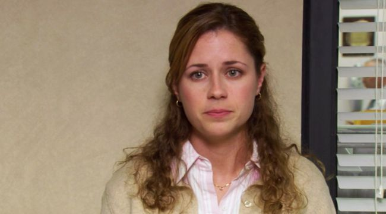
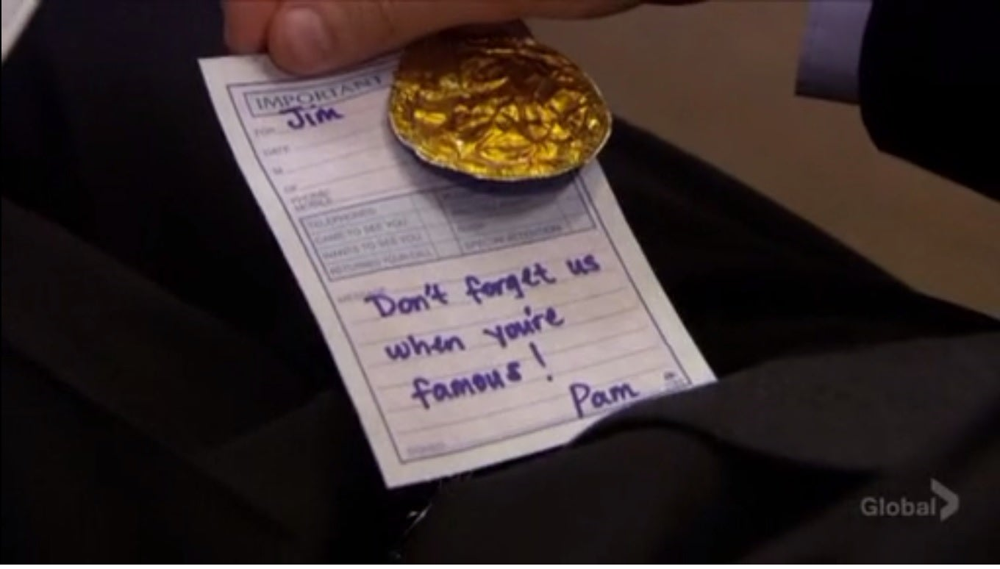
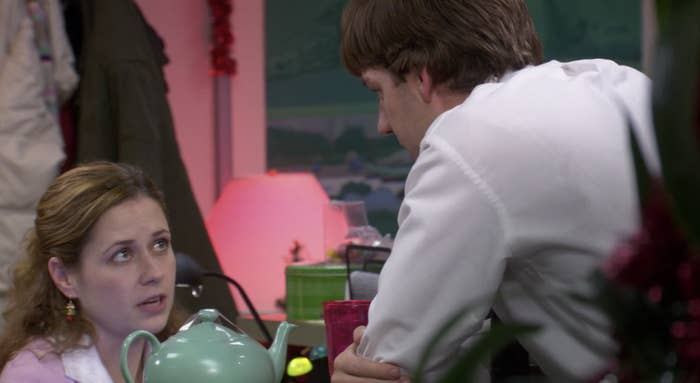
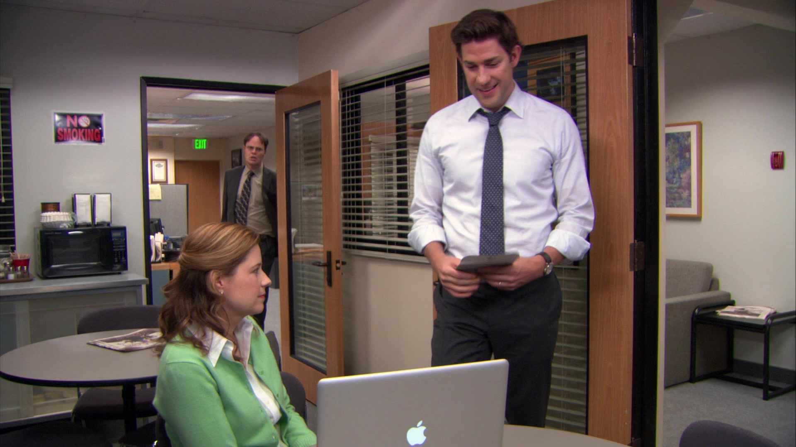

Pam Beesly Halpert

Pamela Beesly Halpert, portrayed by Jenna Fischer, makes her first appearance in "Pilot" and last appearance in "Finale". She begins the series as the quiet receptionist engaged to her longtime boyfriend, Roy Anderson. Professionally she continues her role as a receptionist until the end of season 5 in the episode "Michael Scott Paper Company," where she becomes a salesman. In season seven, she deceives her boss Gabe Lewis into thinking she is Office Administrator, which she keeps until the end of the show.

Perhaps one of the most famous and notable relationships in TV history is that of Jim and Pam. Although the timeline of their relationship has been debated, it is clear that Jim has liked Pam for the few years leading up to the pilot. Pam, however, is engaged to her high school boyfriend, Roy. She is unhappy in the relationship but feels trapped. Jim senses this, and they playfully flirt for the first two seasons. Although Jim flirts with Pam, he has a very hard time watching Pam and Roy together. He explains this to Dwight in a later season, saying, "Yeah, she was with Roy, and, uh, I just couldn't take it. I mean, I lost it, Dwight. I couldn't sleep, I couldn't concentrate on anything. Even weird stuff, like food had no taste. So my solution was to move away. It was awful.". In the finale of Season 2, "Casino Night," Jim confesses his feelings to Pam in a heartfelt speech where he expresses his love for her, she turns him down. Pam later talks to her mom on the phone and says Jim is her best friend and says, "Yeah, I think I am," to an unheard question, presumably "Are you in love with him." She is interrupted by Jim, who enters and kisses her; she responds by kissing back. In Season 3, Jim makes an unexpected departure due to Pam turning him down in "Casino Night". He works in Stamford for a few episodes causing Pam to be lonely and realize his importance to her. When he returns, she is ecstatic to see him, but they soon discover that their friendship isn't the same. Jim is now dating Karen Filippelli, which is extremely hard on Pam. Their relationship remains awkward for all of Season 3 until Pam, in an effort "to be more honest," goes on a lengthy rant about how much she misses Jim in front of the whole office. She notably says, "Jim, I called off my wedding because of you. And now we’re not even friends. And things are just like weird between us, and that sucks. And I miss you. You were my best friend before you went to Stamford, and I really miss you. I shouldn’t have been with Roy. And there were a lot of reasons to call off my wedding. But the truth is, I didn’t care about any of those reasons until I met you.". In the next episode, "The Job," shows a flashback of Jim coming up to Pam at the beach where he says he misses her friendship as well. However, at the end of "The Job," when Jim is interviewing for David, he finds a note Pam left for him in this quarterly reports saying, "Don't foget us when your famous!" while including a memento from one of their most cherished memories, Office Olympics.

After the interview, Jim walks in during the filming of Pam's talking head and asks her out to dinner. She is over the moon and even cries tears of joy.

In the premiere of Season 4, the doc crew catches Jim getting into Pam's car and see them kiss. They confront them with the footage. After initially denying it, they reveal they have been dating for several months. This begins one of the most beloved TV romances that ends in them getting married and having two children Cece and Phillip. Their relationships had ups and down's like all especially with Jim's decision to move to Philly part-time. Overall they are deeply in love and have given us cute Jim and Pam moments from the "Pilot" to the "Finale," the most notable being...

When Jim gives Pam a teapot with all of their best memories for Secret Santa...

When Jim proposes to Pam at the gas station...

When Jim and Pam leave their wedding to go on the ferry...

The DVD Jim made for Pam of their relationship to show her that he would never have doubts about them...